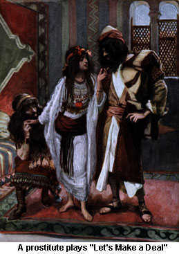
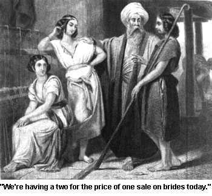

One of the reasons why the general public is not outraged about the sexual content in the Bible is that many modern readers don't understand the 17th century Old English which the King James version of the Bible was translated into. The more modern translations also tend to water-down those passages which are less than pleasing and alter the original intent of the authors of the Bible. For example, Ezekiel 23:20 speaks of a whore who lusts after men who have penises as big as donkeys and who ejaculate as much as horses. The original King James translation says it this way:
"whose flesh is as the flesh of asses, and whose issue is like the issue of horses."
And the Revised Standard Version puts it like this:
"whose members were like those of asses, and whose issue was like that of horses."
The Good News Bible translation completely removes the reference to the sexual organs and discharges of these animals, calling it merely "lustfullness" as follows:
"She was filled with lust for oversexed men who had all the lustfulness of donkeys or stallions."
The actual intent of some biblical passages is masked by the use of phrases or words which don't carry the same meaning in today's society. One example of this is the use of the word "feet." In some passages, the word feet is used to mean "genitals." For example, Ruth snuck into the barn where her prospective husband was sleeping and she layed down next to him and uncovered his "feet." Apparently she was "checking out the goods before she purchased" and the man, realizing that he was uncovered wakes up afraid (as Noah was when his nakedness was uncovered, See Indecent Exposure) until Ruth proposed to him, then he realized that he was not threatened (Ruth 3:7-8). The Bible warns that God will make mothers who don't obey him eat their own newborn children which "cometh out from between her feet." (Deut. 28:57) The Bible also tells of a time when the Israelites would be taken captive by the Assyrian king, who would shave their heads and their pubic hair, describing it as "the hair of the feet" (Isaiah 7:20).
Another example of how meaning gets lost in the translation can be seen in the use of the word "knew" for "had sexual intercourse with." Whenever Adam had sex with Eve it is described as "And Adam knew Eve his wife" (Gen. 4:1). Some other ways the Bible has for saying a man had sex with a woman include "he went in unto her" (Gen. 38:2, 9, 18) or "he took so and so to wife." (Exodus 6:20) Perhaps if the Bible stated "And Adam had sex with Eve" more people would see that it couldn't be the word of a virtuous God, but that would require that they actually READ the Bible first.
Sexual relations between related people commonly took place in the Bible even though the Hebrew law specifically forbade it (Lev. 20:11, 17, Deut. 22:30, 27:22).
Cain was the first born son of Adam and Eve, according to the Bible (Gen. 4:1,2). The Bible tells us that "Cain knew his wife; and she conceived." (Gen. 4:17) If Adam and Eve were the only couple created by God, then Cain must have had an incestuous relationship with his own sister. Why incest was okay in this incident but is not okay in others is a mystery.
Abraham was married to his half-sister as were numerous other biblical characters (Genesis 20:12)
Moses, the leader of Israel, was born of an incestuous relationship (Exodus 6:20)
Lot was saved from the fiery destruction of Sodom and Gomorrah just so he could impregnate his own two daughters (Gen. 19:31-36)
One of Jacob's sons had sex with one of his father's concubines (making him a mother-in-law-#u@%er) (Gen. 35:22)
King David's son, Absalom had sex with ten of his father's concubines (mistresses) in a special tent he erected on top of the palace so that all of Israel would know what he "knew." (2 Sam. 16:21-22)
Another of King David's sons, Amnon, had sex with his brother Absalom's sister (his own half sister). Raping her when she refused to have sex with him, he then became disgusted with her and kicked her out. (2 Sam. 13:1-17)
Much to the disappointment of modern Christians, the Bible teaches that a man can marry as many women as he can support (Exodus 21:10-11, Deut. 21:15) and nowhere does it limit the number of women that a man can marry to only one (Of course a woman can only marry one man...sorry ladies.). The men of the Bible took full advantage of this state of affairs, often having numerous wives, as well as sex slaves or "concubines." The word concubine comes from the Latin meaning "one to lie with" and the Hebrew word for concubine means a woman bought as a slave or otherwise acquired by a man for his sexual pleasure, or to serve as a surrogate childbearer if his wife, or one of his wives, was barren. In the Bible, a father had the right to sell his daughter to be one of these sex slaves (Exodus 21:7-9) God used concubines as a source of offspring throughout the Bible. The Father of God's chosen people, Abraham had sex with his wife's handmaid (Gen. 16:4) and the fathers of several of the tribes of Israel came from Jacob having sex with his wives' handmaids (See Sex, Drugs and Husband Swapping Gen. 30:4-5, 7, 9-12)
Polygamy or having more than one wife was practiced by such popular biblical heros as Abraham (Gen. 16:1-11), Jacob (Gen. 29:28, 30:4,9,26), King David (2 Sam. 2:2, 5:13, 12:8-9, Abijah (2 Chron. 13:21), Jehoiada (2 Chron. 24:3), Gideon (Judges 8:30) and of course the wise King Solomon with his seven hundred wives and three hundred concubines (1 Kings 11:1-4). Mormons were persecuted by Bible-believing Christians in the United States for attempting to continue this practice which God had established in his "good" book.
The Bible has numerous stories which involve rape. Lot was willing to turn his daughters over to a rape mob to protect himself and some extraterrestrial visitors (Genesis 19:4-8). Lot's daughters later raped HIM by using a drug (alcohol) to incapacitate him and then forced him to have sex without his knowledge or consent (Gen. 19:33, 35).
Jacob's only daughter, Dinah was raped by a member of a heathen tribe who then tried to strike a deal with Jacob for her hand in marriage. This deal involved all the men of the tribe having to become circumcised (Gen. 34:2-4 - SeeSexual Mutilation).
As we already mentioned, Amnon also raped his sister Tamar who then tried to get him to marry her and he refused (2 Sam. 13:11-15).
Dealing with a rapist by offering him your daughter's hand in marriage might seem barbaric to modern readers but the Bible says that if you raped a woman who wasn't already betrothed (engaged or promised to someone) all he had to do was pay her father a fee and she had to marry her rapist (Exodus 22:16-17, Deut. 22:28-29). Rape was also legal if a man was at war and saw a foreign woman that he wanted. According to the law, all he had to do was capture her and take her home, shave her head, trim her nails and strip her naked. After 30 days of captivity he could consider her his wife and if she didn't please him he was free to kick her out. Nowhere does it mention getting the woman's consent (Deut. 21:10-14).
One of the more disgusting Bible stories tells of a man who was traveling through the land of the Benjamites (one of the tribes of Israel) with his concubine and was staying at an old man's house when a gang of men came to the house and demanded that the man turn himself over to the mob so they could rape him. The old man tried to dissuade them from raping his guest by offering the mob his own virgin daughter and the other man's concubine instead. The crowd decides to take the man's concubine after which they proceed to rape and abuse her all night long. When dawn comes they release her and she drags herself back to the old man's house, dying on the front step. The man comes out and sees her laying on the doorstep and tells her "Get up, let's get going," but she is dead. So the man carries her dead body back home and cuts her up into 12 pieces and then sends those pieces all across the country just to show how horribly he had been treated while he was a guest of the Benjaminites (Judges 19:16-29). As a result of the outrage this inspires, the tribe of Benjamin is practically exterminated, leaving only a few hundred men to survive. This type of injustice is common in the Bible. God often set the example by punishing entire groups when he was angry rather than punishing the individuals who actually commited the crime.
Women in the Bible were often forced to resort to prostitution in an attempt to equal the balance of power which men had over them. Women in Hebrew society were considered valuable only for their ability to provide offspring. If a woman had no offspring or husband to care for her, she ended up picking through refuse for scraps to stay alive (as Ruth was forced to do - See The Weaker Sex). An example of a woman driven to prostitution because of the patriarchal culture of the Hebrews can be found in the story of Tamar (See the Anti-Tract Biblical Family Values). Tamar became a prostitute to trick her father in-law into making her pregnant and giving her a child (Gen. 38:14-18).
Another famous biblical prostitute lived in the city of Jericho and was the madam of one of the local whorehouses. This is the same Jericho that Joshua made famous by causing its walls to "come tumbling down." Rahab, the prostitute was hiding two Hebrew spies in her whorehouse (I'm sure they only slept there!) and provided them with a hiding place in exchange for the safety of herself and her family during the upcoming Hebrew invasion. Just as he had done in the other cities he invaded, the heartless slayer Joshua killed every man, woman, child, infant, ox, sheep and ass in the city (Joshua 6:21) yet he spared Rahab and her family as he had promised (Joshua 6:22-25). It's interesting that of the thousands of lives this bloodthirsty barbarian took with the sword, it is a traitorous prostitute which would gain his mercy. (See The Bloody Bible)
One of the more famous characters in the Bible had an addiction to prostitutes but God didn't seem to mind until one cut his hair for him. This character was Samson of course. Samson slept with numerous prostitutes even after he was married but for some strange reason he remained in God's good graces until Delilah cut off his magical locks of hair (Judges 16:1, 4) See Bible Stories You Won't Hear In Sunday School).
One of the most popular children's Bible stories is the story of the "wise" King Solomon and how he determined who the mother of a child was. In the story, two women had children in the same house and one of the children died. The mother of the dead child tried to claim that the living child were hers. To determine who the mother was, the king threatened to cut it into two pieces and give one half to each mother. The real mother, responded in horror that the king should give the child to the other woman and not kill it (1 Kings 3:16-27). What isn't told too often is the fact that the two mothers who brought the child before the king, were prostitutes, and the child was a bastard. King Solomon's intentions to "cut the child in two pieces" may not have been as much a stroke of genius on his part as it was a cruel reaction of the king to the illegitimate child and its mother's profession.
In one Bible story, God commands a man to marry a whore, in direct violation of his previous commandment not to do that very thing (Lev. 21:7). This woman continues to commit her adulterous acts even though the man begs her to stop. He finally gets so fed up with her actions that he sells her into slavery, but his "love" for her causes him to change his mind and he buys her back out of slavery (Hosea 1:1-3, 2:1-5, 14-15, 3:1-3,). Some claim this is an allegory of God and how his chosen people treated him.
It appears that God has a special place in his hearts for prostitutes and whores as he often compared his chosen people to a whore who was taken by a man in marriage but kept going back to have sex with other men. The passage we quoted in Biblical Sex Talk was of God comparing Israel to two sisters who couldn't get enough sex. The following are a modern day translations of how God metaphorically described his chosen people and what he thought of them.
Jeremiah 3:1-6
There isn't any place in all the land that you haven't defiled by committing adultery against me. You sit like a whore alongside the road waiting for a customer to come along. You are like a faithless wife who gives herself freely to other men everytime she gets the chance.
Ezekiel 16:1-60
When I first saw you, you were still covered with blood and your umbilical cord had not as yet been cut. That same day of your birth, you were dumped into a field and left there to die until I came along and adopted you as my very own.
As you reached puberty, your breasts became well-rounded and your pubic hair began to grow fully, yet as far as I was concerned, you were still as naked as you were the day you were born.
I married you and you became mine legally, but then you began giving yourself freely as a prostitute to every Tom, Dick and Harry who passed by. All any man had to do to have you for his own was to ask you. And during all these many years of playing the whore against me, you never have stopped to think about that day of your birth when I first saw you still covered with the blood from your mother's womb.
You have gone ahead and built a spacious brothel and in that house you have offered to spread your legs for every man who came along. You have, in fact, been so eager to go to bed with every man available that you have not even charged for your services and for this reason, you are far worse than an ordinary prostitute who at least charges for her services and makes her living thereby.
But I will still have my revenge against you. I will personally knock down all your bordellos and strip you naked and embarrass you before all your lovers. You will be fully repaid for your unfaithfulness and then, although you don't deserve it, I will take you back as my wife and forgive you for everything that you have done.
Ezekiel 23
(In this allegory, God's chosen people had been divided into two kingdoms and God compares the two kingdoms to two sisters named Oholah and Oholibah, who have become prostitutes)
Both of you sisters have become my wives. You, Oholah, the older sister, and you, Oholibah, the younger one, have become infatuated with the Assyrians, our neighbors.
You have found these attractive young men to be irresistible and you have gone to bed with captains, commanders and many other soldiers dashing about on their horses and wearing handsome blue uniforms.
Oholibah, you have become so thoroughly depraved that you have even fallen in love with painted pictures which you saw on a wall. They were pictures of Babylonian military officers and you were so sexually aroused by looking at these pictures, that in your imagination, you were already giving yourself freely to the men in the pictures.
You finally sent messengers to Chaldea to invite the officers whom the pictures represented to come to you in person and you went to bed with them fornicating freely, although, after your brief affair was over, you hated them and broke off with them immediately.
Oholibah, like your older sister Oholah, you started your life of sexual promiscuity as a young girl when you were still in Egypt and the lovers you had there had penises as big as those of jackasses shooting as much semen as horses shoot.
But I will soon stop both of you sisters from longing for Egypt and the many lovers you had to leave behind there. You will be fully repaid for whoring and then you will know who I really am.
The prophet, Jeremiah, went so far as to compare Israel with a female jackass in heat, a disgusting sight indeed (Jeremiah 2:24).
In the Book of Revelations, it is Babylon which is compared to a whore that has had sexual relations with the kings of the earth and who has made the people of the earth "drunk with the wine of her fornication" (Revelations 17:1-9, 19:1-2).
Couldn't a virtuous and perfect God come up with allegories that were less obscene than these?
When God decided to make a deal with man and chose Abraham to be the father of his chosen people, God felt it necessary to seal the deal in blood, but not just ANY blood. God wanted blood from man's sex organ. There is something very suspicious about a God who demands that you cut off a part of your penis as a sacrifice to show your dedication to him. The circumcision of male children was done as a form of human blood sacrifice to God. This purification sacrifice of human blood allowed the mother to be cleansed of her "unclean blood" at 40 days instead of the 80 days a female birth required (See Dirty, Disgusting Discharges).
God's obsession with the male foreskin appears in various places in the Bible. He even went so far as to demand that any boy child who didn't have his foreskin cut off would be "cut off (pun intended?) from his people." (Gen. 17:14) God intended to carry out this threat by killing Moses because his son had not been circumcised (Exodus 4:24), but the wife of Moses grabbed a sharp stone and cut her son's foreskin off (ouch) first and threw it down at Moses "feet" (genitals?) calling him a "bloody husband" (Exodus 4:25-26).
When God's people wandered the desert for 40 years under Moses and Joshua's leadership, the ritual of circumcision was temporarily suspended, but God never totally called for a halt to the bloody practice. God commanded Joshua to make sharp knives and circumcise ALL the boys and men, which he did (Joshua 5:1-9).
After Shechem, a member of a heathen tribe, raped Jacob's only daughter, he "fell in love" with her and wanted her for his wife. Shechem's father went to Jacob to attempt to make peace between the two tribes by offering a dowry of any amount which Jacob would ask for his daughter's hand in marriage. Jacob's sons deceptively told the heathens that the only way the two families could be joined would be if all the male members of the heathen tribe became circumcised. The leader of the heathen tribe was able to convince all the men to get circumcised in compliance with the demands of Jacob's sons. While the men were layed up recovering from the painful operation, Jacob's sons went into their camp and murdered all the men, taking the women, children, cattle and property for themselves. In typical Godly fashion they "avenged" the rape of their sister by killing an entire group of people who had nothing to do with the rape (Genesis 34:1-29). Shechem had done nothing which was in violation of Hebrew law (See Forced Entry), he had offered to pay the required fee and intended to keep his end of the bargain. The rest of the tribe made an act of faith which was brutally betrayed by God's chosen people. The only thing that Jacob worried about after this event was that the reputation of his tribe would be damaged in the local area and the other tribes would hunt him down and destroy him (Genesis 34:30-31). There is no mention of God's disapproval of the treacherous actions of Jacob's sons.
King Saul was jealous of David but realized that God was protective of him so he devised a plan to get rid of David by having him killed in battle (See The Bloody Bible). King Saul told David that he wanted him to be his son-in-law and marry his daughter. Since David was poor, King Saul told him that he would accept a "special" dowry for his daughter's hand. All David had to do was kill one hundred Philistines and bring the king their foreskins as the dowry. David zealously killed twice that number of Philistines and cut the foreskins off their penises and brought them to King Saul (1 Samuel 18:20-27). The image of such a disgusting spectacle should be enough to turn the stomach of any self-respecting person, yet millions continue to embrace the Bible as being the word of God. But then it also doesn't seem to bother them that this is the same God who demanded that his followers cut off a piece of their penis to show their loyalty to him.
Even though God discriminated against those who had been wounded in their testicles ("stones") or had their penises ("privy") cut off (Deuteronomy 23:1), Jesus taught that some people would castrate themselves for God (Matthew 19:12). God told the prophet Isaiah that those who were castrated would get a better place in heaven than those who could have children (Isaiah 56:3-5).
Paul attempted to put an end to the practice of circumcision to make Christianity more attractive to pagan converts who weren't too anxious to have their foreskins whacked off (1 Corinthians 7:18-19, Galatians 5:2-6). It's amazing that Paul could rationalize away what God called "an everlasting covenant" when Jesus was himself circumcised and never hinted during his life that the everlasting covenant of circumcision were to be done away with. In fact Jesus specifically forbade what Paul did (Matthew 5:17-19). Paul became the greatest "antichrist" by doing away with the law of circumcision (2 John 19-10), and today, Christianity is largely based on the teachings of this "antichrist."
The Bible tells us that God thinks that any discharge from the sex organs is unclean. Primitive man believed that when a woman had a menstrual cycle, she was getting rid of "bad blood." God apparently believed the same thing because, according to God's laws, a woman who was on her menstrual cycle was considered "unclean" for seven days. This uncleanliness was apparently contagious, since anyone who touched her while she was on her period was also considered unclean (Leviticus 15:19). In another passage, the Bible states that if a man has sex with a woman on her period, both he and the bed they did it on will be unclean (Leviticus 15:24). Later in the chapter this uncleanliness was considered to be so bad that the death penalty was demanded for any couple who had sexual intercourse while the woman was having her period (Leviticus 18:19, 20:18). Not only people, but things could catch this uncleanliness, including everything she layed on or sat on. And if anyone touched something which she layed or sat on, that person was also considered to be unclean (Leviticus 15:20-28). While she was unclean, the menstruating woman had to participate in purification rites, staying isolated and hidden, often outside the city or camp, until she had cleaned her menstrual rags. After the menstruating woman had completed her seven days of purification rites, she was required to bring two animals, for a burnt offering and a sin offering, to the priest, to atone for her "sin" of uncleanliness. The New Testament also mentions how a woman with a twelve year long menstrual flow (probably as a result of veneral disease due to its description -see Mark 5:26) was healed after she touched Jesus' garment (Matt. 9:20, Mark 5:25-29, Luke 8:43). It's amazing to think that any educated person would believe that the creator of all the universe would exhibit such ignorance concerning the natural reproductive function of the female body.
God's word tells us that the very act of conception is "sin" (Psalms 51:3-5) and that when a woman conceives, it is in sin. It also said that God made childbirth painful as a form of punishment (Genesis 3:16). Believers rationalize that Eve's reproductive functions were cursed because Eve succumbed to temptation and partook of the fruit of the tree of knowledge in the garden of Eden. Ask any woman today what she did to deserve pain and suffering during childbirth. If she is a rational human, she will tell you that nothing that any of her ancestors did should condemn her to a life of suffering. For some reason, God decided to tell Moses that the miraculous and beautiful act of childbirth makes a woman "unclean" (Leviticus 12:1-8). Again it is the blood which accompanies the birth which supposedly makes her unclean (Lev. 12:7). If she delivered a male child she was considered unclean for 40 days and if she delivered a female child she would be unclean for 80 days. As we stated earlier, it was probably the blood sacrifice of human flesh (circumcision) that her shortened her period of uncleanliness, although some experts have theorized that the difference may have been due to the increased value of a male child over a female in Hebrew society.
Women weren't the only ones with unclean discharges in the Bible. A man's "issue" or seminal discharge was considered "unclean." According to God's laws, after engaging in sexual intercourse, both the man and the woman were supposed to clean the semen off themselves with water. Even after doing that they were considered unclean for the rest of that day (Leviticus 15:18). Moses went so far as to command the men in his group to keep clean by washing their clothes and not having sex with their wives for three days (Exodus 19:14-15).
Ejaculation, whether by masturbation or nocturnal emission was considered to be dirty by God, who lumped it in the same category as handling rotten meat (Leviticus 22:4-7). If a man masturbated and his ejaculate got on his clothes or the carpet, those things had to be washed and were also considered unclean until the evening (Leviticus 15:16-17). Also, if a man had a wet dream, he had to leave the camp and couldn't come back in until the next evening (Deuteronomy 23:10-11). What a sticky situation to be in!
Onan, the second husband of Tamar, (See Biblical Family Values), was killed by God as a punishment for refusing to impregnate his dead brother's wife by pulling out of her vagina and ejaculating on the ground (Genesis 38:1-10). Many modern Christians mistakenly use this passage to claim that masturbation is a sin, thinking that Onan merely ejaculated on the ground. What they fail to realize is that Onan was having sex with Tamar when his "seed" was spilled on the ground. More evidence that the Bible is not completely read by those who claim to believe it is God's Word. This is another one of those Bible stories that you won't hear too often in Sunday School.
Another cause for a man to have an "unclean" discharge came as a result of veneral disease. The Bible describes gonorrhea as "a running issue" and says that any man who has it is unclean. It then proceeds to describe how everything that he lies or sits on is unclean and how anyone who touches him, his bed or sits on anything he has sat on is unclean and how anything that was under him is unclean and his saddle is unclean and any pot that he touches must be destroyed. Finallly it says that once his "running issue" has stopped running, he must clean himself for seven days, then give a sacrificial offering to atone for his disease (Leviticus 15:1-15). A priest who has gonorrhea was also unable to eat any of the holy food which priests ate, until his disease was cleared up (Leviticus 22:4). King David once described himself as having a condition which was probably syphilis, but could have been some other veneral disease (Psalms 38:3-8).
Even though the Bible has numerous references to homosexual activity, many Christians believe that God hates fags (See http://godhatesfags.com/). Of course they often ignore the fact that Jesus participated in what could only be called "man-boy love" and one of God's most favored men, King David, was a "flaming fag" himself. We at the Luciferian Liberation Front allow all men the liberty to pursue their own rational self interest in the manner which is natural for them. We believe that homosexuality is not so much a life-style choice as it is a natural genetic mutation. As such, homosexuals should be allowed to live their lives in the manner which is natural for them, so long as they harm no one. If God hates fags, then he never should have made the potential for genetic diversity. Christians are afraid to learn that homosexuality is due to genetics because that makes it God's fault. Ask the next one you see why God makes Down's Syndrome children or any other genetic mutation, and they'll duck and dodge, falling back behind the curtain of "the mysteries of God."
The biblically famous David had a homosexual relationship with King Saul's son, Jonathan. When they first met, they became "soulmates" in an encounter best described as "love at first site" (1 Samuel 18:1-5). Jonathon loved David even more than his own father, putting himself in harm's way to protect the life of his lover, David (1 Samuel 19:1-7). King Saul became jealous of David and was determined to kill him. This made Jonathan so upset that he couldn't eat. Jonathan then snuck off to a field to lay with David, holding him in his arms, kissing and weeping like the lovesick couple they were (1 Samuel 20:31-42). When Jonathan's father, King Saul, found out about the homosexual affair, he confronted Jonathan with the fact that he knew that he was gay and then he blamed it on Jonathan's mother, calling her "perverse" and "rebellious" (1 Samuel 20:30). Later when Jonathan died, David admited that [Jonathan's] "love to me was wonderful, passing the love of women." (2 Samuel 1:25-26)
The Bible claims that homosexuality was a punishment which God gave to those who worshipped idols or commited other forms of blasphemy. (Romans 1:18-27).
Indeed the Bible is full of anti-homosexual laws, claiming that homosexuals are in the same class as thieves and murderers (1 Corinthians 6:9-11, 1 Timothy 1:8-11, Leviticus 18:22, 20:13).
The Bible even condems cross-dressing, calling transvestites an abomination! (Deuteronomy 22:5)
Jesus' homosexual activity has been demonstrated in modern theater and cinema and can be traced to actual biblical passages. From the modern Christian model, we can assume that Jesus loved all of his disciples, yet the Bible specifically describes one disciple as "the disciple that Jesus loved" (John 19:26, 20:2, 21:7,20). This disciple is described as "lying on Jesus' breast" at the last supper (John 13:23, 25). What Jesus did with this specific disciple to earn him the title "the disciple that Jesus loved" can only be imagined but it's not too difficult to get a pretty clear picture seeing them snuggling with each other in public. Jesus himself was a homo. This is further supported by scriptures which describe Jesus displaying inappropriate behavior for a man to be showing to other men, such as lust (Mark 10:21), suggesting that men should be kissing him (Luke 7:45), describing men sharing the same bed (Luke 17:34), etc.
When Jesus was in the garden of Gethsemane, he left his disciples who were sleeping and went off, returning several times to check on them (Mark 14:37-41). When Jesus came back after the third time, there was a young man following him with only a linen cloth wrapped around his naked body. When the guards tried to grab the young man after grabbing Jesus, the young man dropped the cloth and ran off naked (Mark 14:51-52). Who was this scantily clad young streaker and why was he returning with Jesus? What had Jesus REALLY been doing with a naked young man that night in the garden? The "Secret Gospel of Mark", known from early Church father, Clement of Alexandria's (150-230 C.E.) letter to Theodorus contains excerpts which include the following
"...the young man, looking at Jesus, loved him and began to beseech him that he might be with him...they went into the house of the young man, for he was rich. And the young man, looking at Jesus, loved him...and after six days Jesus gave him an order; and when the evening had come, the young man went to him, dressed with a linen cloth over his naked body. And he remained with him that night, because Jesus taught him the mystery of the kingdom of God."(Secret Gospel of Mark).
What exactly is this "mystery" of the kingdom of God that Jesus spent all night showing the scantily clad young man? This very suggestive passage was inserted in the canon of the orthodox Alexandrian Church of Egypt. Some scholars say that it should be inserted in our modern Bible after Mark 10:34. The naked man incident is always left out of Easter pagents for some strange reason.
Bible-thumpers love to scream about the evils of marital infidelity but seem to ignore the many instances of adultery and mate-swapping which took palce among God's favored people.
One of God's Ten Commandments states "Thou shalt not commit adultery." (Exodus 20:14). The punishment for committing adultery was death (Leviticus 20:10). If a man suspected that his wife had committed adultery there was a test that could be performed to determine whether she had been faithful or not. If the suspecting man brought the priest an offering (bribe) then the priest would mix a concoction of water and dirt from off the floor of the temple which he would make the woman drink. If the woman got sick after drinking the water, it was because she had committed adultery. If she was innocent she would then be able to get pregnant (Numbers 5:11-31). Fortunately, modern forensics doesn't rely on such superstitious hogwash to determine fidelity or paternity.
One of the more popular biblical incidence of adultery took place when King David saw a woman washing out her menstrual rags in the fountain outside his palace. The king asked who she was and one of his servants told him that she was Bathsheba, the wife of Uriah, one of the soldiers in King David's army. The king then sent his messengers to take her and bring her to his bedroom (2 Samuel 11:2-4). This woman knew that it was out of the question for her to resist the advances of the king so she submitted to his demands and when he was done having sex with her, she went back to her home. Meanwhile, her husband was fighting for his king and country. Soon Bathsheba discovered that the king has made her pregnant. When the king finds out she is pregnant he devises a plan to have her husband come back from the war and stay with his wife, in this way the king hoped that Uriah would think that he had gotten his wife pregnant and wouldn't suspect the king (2 Samuel 11:5-9). After Uriah returned from the war he tells the king that he couldn't put his own pleasure and comfort first by going home while his comrades in arms were still fighting so he stayed at the palace until it was time for him to return to the war (2 Samuel 11:10-12). This foiled the king's plans to cover up the pregnancy so King David adopted the plans which King Saul had attempted to use to dispose of David when he was younger, he sent Uriah into the fiercest part of a battle and had his commander abandon him so that he would be killed by the enemy (2 Samuel 11:15). In this manner, King David disposed of the husband of the woman that he had gotten pregnant. After she learned that her husband was dead, Bathsheba mourned for him until King David had her brought to the castle to become one of his wives (2 Samuel 11:26-27). God was not pleased with King David's actions in this incident and in typical Godly fashion he punished the innocent child which David had created as a result of his adultery. God claimed that he would forgive David of this deed but now God's enemies would now have a chance to make fun of God. Because of God's childish pride, the baby would have to die (2 Samuel 12:13-14). After the child was tortured by God for seven days, it finally died (2 Samuel 12:18) and King David immediately went to comfort his new wife Bathsheba. He did this by having sex with her (surprise) and created a second child which "the Lord loved," the wise King Solomon. (2 Samuel 12:24). King David's servants were shocked at the fact that while the baby lie sick and suffering, King David mourned, but as soon as the child died, the King got up, ate and went right in to do what caused all this to begin with. David replied that while the child was alive he hoped to influence God to not kill the child, but once the child died he knew that he couldn't bring it back. In other words, "why cry over spilled milk?" (2 Samuel 12:21-23) God later called this same King David, "a man after my own heart" (Acts 13:22).
The prophet Nathan told King David that one day God would give David's own wives to another man who would go to bed with them in full public view to shame David before his own people (2 Samuel 12:11-12). Little did the king realize that the man who would do this would be his own son, Absalom (See Incest is Best).
When Joseph was sold into slavery as a result of jealousy (which his father had created by loving Joseph more than his other children) at the age of seventeen, he gained favor with the captain of Pharoh's guards, but he gained even greater favor with that captain's wife. She tried to get Joseph to have sex with her but to his credit, he refused. The woman tore Joseph's garment off of him as he tried to escape from her clutches. In her anger after being refused by Joseph, she acused him of attempting to rape her. Because of this deception, Joseph was put in prison (Genesis 39:7-20). A refreshing example of someone respecting another man's property (women were considered to be property - See The Weaker Sex) and doing the morally correct thing in the Bible!
The first thing Adam and Eve did when they partook of the fruit of the knowledge of good and evil was try to hide their nakedness. Apparently, God had no problem with them running around in the garden naked while they were ignorant, but once he realized that they knew better, God made them clothes to wear (Genesis 3:21).
After Noah got off the ark, he got rip-roaring drunk and fell asleep with his genitals exposed. One of Noah's sons saw that he was laying naked and went and told his two brothers about it. His two brothers went in and covered Noah's exposed genitals without looking at them. After Noah found out that his son had seen him naked, Noah administered typical godly justice by punishing the son of the son who had seen him naked, cursing him to be a "servant of servants" to his brothers (Genesis 9:21-25). Noah's son may have been guilty of more than simply seeing his father naked because the Bible states that when Noah woke up he "knew what his younger son had done unto him." (Genesis 9:24) We can only speculate as to what really took place between the drunken, naked Noah and his son.
God's aversion to the naked human body was so great that he gave special instructions to his priests to be careful not to expose their genitals when walking up to the altar (Exodus 20:26).
When Moses came down from the mount with the Ten Commandments he saw the people dancing in the nude before the golden calf and had 3,000 of them slaughtered (Exodus 32:25-28).
God doesn't seem to mind nakedness if the naked person is prophesying, though. The prophet Micah stripped himself naked and wailed and howled, prophesying in the nude (Micah 1:8).
God commanded the prophet Isaiah to strip himself and walk naked across Egypt and Ethiopia for THREE YEARS, prophesying in the nude. God then said that the Egyptians and Ethiopians would following Isaiah's example by being led away captive by the king of Assyria "naked and barefoot, even with their buttocks uncovered to the shame of Egypt" (Isaiah 20:1-4)
King Saul displayed the same lack of modesty with his own body while under God's direction. Once he was overcome by the spirit of the Lord and he stripped himself naked and prophesied in the nude. Then he layed on the ground, naked for the rest of the day and that night. The people who saw it were only surprised that Saul was prophesying, probably because they were used to seeing prophets expose themselves (1 Samuel 19:20-24).
King David was also an exhibitionist who flashed his royal subjects with his royal "staff." After returning home from acquiring the ark of the covenant, King David danced in the streets and exposed himself in front of his own servants' handmaids (2 Samuel 6:14-16). When his wife witnessed his behavior, she accused him of behaving like a common pervert (2 Samuel 6:20). In his anger, King David told her that what he did was no one's business but his and the Lord's and that if she thought that behavior was vile, she hadn't seen ANYTHING yet! He then told her that he would be even more vile and the women servants who she had spoken of would honor him (2 Samuel 6:22). The Bible then tells us that his wife was childless because she dared to speak out against David's behavior (2 Samuel 6:23). Whether this was because the King refused to have sex with her or because God had made her barren is not made clear.
The Jews were surrounded by pagan fertility religions which worshipped the sex organs. Many of the biblical references to the worship of the penis or the vulva have been camouflaged in the usual method of mistranslation. The pagans would construct graven images of penises which the Bible described as "high places" or "pillars" and the yoni or female sex organs which was translated as "grove" (a reference to the bushy appearance of female pubic hair). Knowing the hidden meanings, we can now visualize the wooden and stone statues of giant penises and larger-than-life vaginas which were erected "on every high hill and under every green tree" across the land during the reigns of Saul, David, Solomon and his son Rehoboam (1 Kings 14:22-24).
The grandson of Rehoboam, King Asa attempted to destroy the worship of these phallic idols and he even kicked his mother off the throne because she had made an idol of a giant penis inside a giant vagina. He destroyed this particular pornographic idol but for some reason he didn't destroy the giant penises (1 Kings 15:11-14).
These phallic idols had even found their way into the main temple in Jerusalem. A giant Yoni had been erected inside the sanctuary. Women who lived near the temple made a living weaving artificial pubic hair which people could purchase to hang on this large representation of the female sex organ as a form of personal worship, sort of like modern Catholics who place candles at altars today. All the fun was eventually ended by King Josiah who had the Yoni taken out and destroyed. He even destroyed the houses of the women who made the hangings for the Yoni (2 Kings 23:6-7).
The giant penises and vaginas that were erected outdoors were so popular that many kept smaller versions of them in their homes or carried them with them like modern Christians carry small replicas of Jesus being tortured to death on a cross. These smaller idols were called "household gods" or in the Hebrew; "ephods" and "teraphim (Judges 17:5) and were replicas of erect penises and gaping vaginas.
These household gods played an interesting role in the story of Jacob in the Bible. Jacob married Leah and her sister Rachel, who were daughters of the pagan, Laban (See Sex, Drugs and Husband Swapping). When Jacob left Laban's house, his wife Rachel stole her father's idols and hid them. Once Laban discovered that his precious sex idols were missing, he tracked down Jacob and demanded that they be returned. Jacob didn't know that his wife had stolen these idols so he was enraged at the accusation. When Laban searched in the tent of Rachel for the missing idols, Rachel pretended like she was on her monthly menstrual period so that Laban wouldn't come near her (See Dirty, Disgusting Discharges). Laban was unable to find the idols because Rachel was SITTING ON THEM (Genesis 31:19-35). Apparently Rachel had such a fondness for these sacred dildos that she couldn't bare to part with them!
Apparently, both the men and women of Israel were guilty of participating in the pagan sex rituals, orgies and debaucheries which took place in these fertility religions. Numerous times in the Bible, God got angry at his people for joining their neighbors in practicing the worship of the phallus and the yoni. Even today, the remnants of these fertility religions haunt Christianity (See Something Fishy).
As we've already mentioned, Moses witnessed his people participating in one of these mass sex orgies after he first received the 10 Commandments (Exodus 32:25-28).
When Moses led the Hebrews out of bondage in Egypt, they met up with a kingdom of Midianites who lured the men into their sex worship. When God saw his people having sex with the Midianite women and bowing down to their phallic idols, he commanded Moses to cut off the heads of all the men who had participated in the sex worship with Midianite women and to hang their heads out in the sun (Numbers 25:1-5). While Moses was carrying out God's bloody commandment, one of the Hebrew men was spotted taking a Midianite woman into his tent to have sex with her. The grandson of Aaron, the priest, saw this and took a spear and went in and drove it straight through both the man and the woman while they were having sex (Numbers 25:6-8). God was pleased with the actions of the spear-chucker and gave him an everlasting priesthood because of his murderous zeal. After the spear was thrown, God called off the plague that he had cursed Israel with. This plague had taken the lives of 24,000 Israelites because of God's "jealousy" (Numbers 25:9-11). Now God turned his wrath on the women who had tempted his chosen people with their sexual "wiles," as God put it (Numbers 25:16-18). As a result of this crusade, 5 kingdoms of Midianites were slain (See A Really Scary Story).
This wasn't the last time the Hebrews bowed down and bent over for pagan sex worship. When Gideon became the ruler in Israel, he erected a golden penis (ephod) which the people began to "whore" after (Judges 8:27). After Gideon died, the people turned back to the worship of the sex gods in full force (Judges 8:33-35). The prophet Hosea described the drunken debaucheries of the Israelites in detail, telling how they were consorting with animals for revelation and how their women were having sex with everyone they met (Hosea 4:11-16). The prophet Amos told of a situation where a father and son would share the same woman in sexual worship (Amos 2:6-8)
With all of these sex organs being worshipped by God's chosen people, we can see why God compared them to a prostitute and commanded them not to go "whoring" after their neighbors' gods (Exodus 34:12-16 - Also see The Oldest Profession).
The story of Jacob is one of the most morally degrading stories of the Bible. First off, Jacob and his mother lie and decieve to steal what rightfully belongs to Jacob's older brother, Esau (Genesis 27:6-30) . To avoid Esau's justified wrath, Jacob runs off to stay with his uncle (Genesis 27:42-43). While there, he falls for his uncle's daughter, Rachel (his cousin...again, incest is best) and he makes a deal with his uncle, Laban, that he will work for Laban for seven years in return for the hand of Rachel in marriage. At the end of the seven years, there is a big wedding feast after which Laban sends his older daughter Leah to the tent of Jacob. Jacob has sex with Leah, thinking she is Rachel. When Jacob finds out the he was tricked, Laban tells him that it is against their customs to marry his younger daughter off before his older one. He then tells Jacob that if he's willing to work for seven more years, he'll let Jacob marry Rachel, this time for SURE. So after a week (the honeymoon period for his marriage to Leah), he is able to marry Rachel and Jacob has to work for seven more years for Laban (Genesis 29:15-28). Hebrew law later forbade a man from marrying his wife's sister but Jacob was able to get away with doing this before God came up with that law (Leviticus 18:18).
The Bible makes it clear that Rachel was pretty while Leah was merely "tender-eyed," and Jacob loved Rachel but hated Leah (Genesis 29:31). God saw that Jacob loved Rachel but hated Leah so as a form of retaliation, God made Rachel unable to bear children and God opened Leah's womb and she got pregnant. A fine example of the ignorant Hebrew belief that God would use his powers to control the "magical" process of reproduction. Sadly, Leah realizes that her husband hates her but she hopes that now that she has given him a son, perhaps his heart will soften and he will finally love her (Genesis 29:32). Unfortunately for Leah, Jacob's hatred of her persists even after she has a second and a third son for him. By the time she has a fourth son, Leah has given up on gaining Jacob's love (Genesis 29:35).
In the meantime, Rachel becomes jealous of her sister because God won't let her get pregnant so she cries out to Jacob "Make me pregnant or I will die!" (Genesis 30:1) Jacob tells her, "Hey, don't blame me if God has decided to keep you from getting pregnant!"(Genesis 30:2) even though it was Jacob's hatred of Leah which caused God to keep Rachel from reproducing. In her frustration, Rachel sends her handmaid to Jacob so that she can get pregnant and Rachel will get credit for it. The way this process worked was, the handmaid would deliver the child while squatting between the legs of her mistress (in this case, Rachel) and the child would be considered to have come from the mistress instead of the handmaid. What a crock of nonsense! In this fashion, Jacob makes Rachel's handmaid pregnant twice and Rachel got credit for giving Jacob two sons.
By this time, Leah had stopped having children and she saw that Rachel was getting credit for the children her handmaid had produced with Jacob so she decides she can play that same game. Leah gives Jacob her handmaid and he proceeds to get this second handmaid pregnant twice also so Leah now gets credit for giving Jacob two more sons. Thanks to the patriarchal system of the Hebrews, the two women were now engaged in an all out fertility race to see who can give Jacob the most sons. The score so far is Leah:6, Rachel:2.
One of Leah's sons found some mandrakes (a plant whose root was believed to have fertility enhancing characteristics) while he was working in the field and he brought them to his mother. When Rachel learned that Leah had possession of the magical roots of reproduction, she went to Leah and begged her for them, hoping that with them, she would finally be able to get pregnant herself. Leah didn't want to give away the roots because she hoped they would help her break her lapse in fertility, but Rachel, who hadn't had any children yet, was willing to sell her husband to get them. Rachel was scheduled to have sex with Jacob that night and she offered to buy the roots from Leah by prostituting Jacob to her. Leah agreed to the husband swap and when Jacob came home that night Leah told him "you must come have sex with me because I have bought you tonight with my mandrakes." (Genesis 30:16) Jacob didn't object, and neither did God apparently, because the Bible states that God heard Leah and let her get pregnant with a fifth son (Genesis 30:17). Then Leah got pregnant a couple of more times and had another son and a daughter. Rachel had some catching up to do.
God finally had some pity on poor Rachel and he let her get pregnant and she gave Jacob a son (Genesis 30:22-24). She was able to give Jacob one more son but she died in childbirth (Genesis 35:16-20). The final score was: Leah-8 sons (2 from her handmaid), Rachel-4 sons (2 from her handmaid also). These twelve sons would become the fathers of the twelve tribes of Israel. God surely works in mysterious ways!
As can be seen from the sections we've already discussed, women were mistreated throughout the Bible, being relegated to the status of "baby-maker" and treated like property to be bought and sold or used as a shield to protect men from mobs. Numerous books have been written on the mistreatment of women in history but the Bible provides us with a unique glimpse into God's attitude toward what we at the Luciferian Liberation Front consider to be man's better half.
The fact that God considers women to be inferior is made plain throughout the writings of the Bible. Paul, the true author of Christianity, repeatedly taught the early followers of Christ that women should stay in their place, which was subservient to man (1 Corinthians 11:3). He also stated that women were created for man's use (1 Corinthians 11:8-9), that they should learn in silence, not asking questions or raising doubts about the authority of men in public (1 Timothy 2:11-12). He went on to state that women should not speak in church because that was shameful, since the word of God would never come to a mere woman. If the woman wanted to learn more about something she had heard in church, she should ask her husband to explain it to her at home (1 Corinthians 14:34-36). Paul rationalized that it was the woman's fault that man fell from grace in the garden of Eden, because she was deceived by the serpent, not the man (1 Timothy 2:14).
Modern Christians love to ignore the teachings of Paul in this matter. The difference between men and women in Paul's eyes is made quite clear when he tells men to love their wives while women are commanded to be submissive and obey their husbands (Ephesians 5:22-23, Colossians 3:18-19 1 Peter 3:1-7).
The fact that women were mere property is made readily apparent by the manner in which women were treated in the Bible. Fathers could sell their daughters into slavery (Exodus 21:7), use them for protection from mobs (Genesis 19:8, Judges 19:24), offer them as rewards for assasins (Joshua 15:16-17), or murder them as a human sacrifice, if God so demands (Judges 11:30-31, 34-40). Men could rape with relative impunity (Exodus 22:16-17, Deut. 22:28-29), taking women or girls as war booty (Numbers 31:17-18, Deut. 21:10-14) and enslaving as many women as he could afford to keep through the Godly practice of polygamy (Exodus 21:10).
As we pointed out earlier, taking women as property during war was ordained of God. When God told his people how to properly invade a foreign city, he told them that if the city didn't surrender peacefully and agree to be slaves, the Hebrews were to kill all the men in the city and take the women and the rest of the property for themselves (Deuteronomy 20:10-14). Of course, this guidance only applied to those cities which were very far away. The cities which God had given them for an inheritance were to have all living things in them killed (Deuteronomy 20:15-16).
When the tribe of Benjamin was nearly exterminated (See Forced Entry), the leaders of Israel had decreed that they wouldn't allow any of their women to marry the men of the tribe of Benjamin (Judges 21:1). Without women, the tribe was doomed to become extinct, so the leaders of Israel came up with a plan to get wives for the Benjamites (Judges 21:2-4). They called for a council meeting but didn't send out an invitation to one of the minor tribes. When there were no representatives from that tribe present at the council meeting (Judges 21:5-9), the leaders declared that the minor tribe that hadn't shown up would have all of its people that weren't virgin women of marrying age, slayed (Judges 21:10-11). The surviving women would then be given to the men of the tribe of Benjamin (Judges 21:12-13). After the virgin women of the minor tribe were redistributed to the Benjamites, it was discovered that there were still not enough women to keep the Benjamites viable as a tribe (Judges 21:14). The leaders then decided that it would be best for the Benjamites to go to a festival and simply kidnap the daughters that came out to dance. If the fathers of the kidnapped daughters came to complain, the leaders planned to tell them, "it's better that they were kidnapped than that they were the spoils of the war which we could have declared on you." (Judges 21:19-22). The Benjamites did what the leaders told them to do, kidnapping an unknown number of virgin girls and God was pleased (Judges 21:23-24).
When a woman was "purchased" by a marriage contract, the mother and father of this woman were required to keep the wedding night sheets (which would be blood stained to prove her virginity) just in case the man ever decided that he wanted to challenge her virginity. If the man had falsely accused her of not being a virgin, then he had to pay a fine to the father of his wife. But if her parents couldn't produce the bloody artifacts, the woman would be taken to her father's house and stoned to death by the men of the city (Deuteronomy 22:13-21). The manner of execution for the daughter of a priest who was found to be lacking in her virginity was by fire (Leviticus 21:9). Later, if a man found some "uncleanness" in his wife he could declare that she was damaged or soiled goods, and he could easily get rid of her by writing a bill of divorce (Deuteronomy 24:1-4).
The Bible encourages men to fondle their women, particularly their breasts (Proverbs 5:18-19), but if a woman were to accidentally grab a man's genitals while that man was fighting with her husband, she was to have her hand cut off (Deuteronomy 25:11-12)
If a man made an oath, his word was considered his bond, but if a woman made an oath it had to be cleared through her father or husband first before it was considered binding (Numbers 30:2-16)
The Bible tells us that Jesus also mistreated women, including his own mother. When his mother was worried about his safety, Jesus got upset at her, arrogantly asking "Why were you looking for me?" (Luke 2:49) and when she tried to tell him that they were out of wine at a wedding feast, the drunkard Jesus replied, "Woman, what have I to do with you?" (John 2:3-4). He further displayed his respect of motherhood by ignoring a desperate mother who came to him broken-hearted over her dying daughter (Mattew 15:22-26). Jesus also taught that men should abandon their wives and children if they wanted to receive eternal life (Matthew 19:29, Mark 10:29-30, Luke 18:29-30).
A woman's purpose in life to the patriarchal system of the ancient Hebrews was to be a recepticle for man's seed. If a woman were unable to produce male children then she was considered cursed. Without a husband or sons to take care of her, women were forced to live in exile, digging through the trash for scraps to survive. The widow was considered an outscast that had envoked the wrath of God in some manner so the people scorned her. The story of Ruth in the Bible shows us the horrid treatment which these "deserted" women could expect from God's people.
Ruth was the daughter-in-law of a widow named Naomi. Naomi had two sons but both of these sons died, leaving Naomi without any male support in her old age. Naomi told Ruth and the wife of her other dead son to return to their own people, where they could remarry and hopefully have children that would take care of them in their old age, since she knew that she was too old to remarry or to have sons that would take care of her, she was "without hope" (Ruth 1:12). One of the daughter-in-laws left to return to her own people but Ruth decided to stay with Naomi. When Naomi returned to her home town she told people not to call her Naomi (which meant "pleasant) but instead, to call her Mara (which meant "bitter" because she was bitter with how the Lord had treated her by taking her sons who were supposed to support her in her old age).
Ruth went out to gather scraps from what the harvesters left behind in the fields and she met up with a rich man who treated her kindly (Ruth 2:1-23). God had made a law which said that if a woman's husband died before he could provide her with a son, then the brother of that man was required to take the widow of his brother and have sex with her until she had a son (Deuteronomy 25:5-6). Naomi knew of this law and when Ruth told her about the rich man, she saw it as an opportunity to get Ruth hitched to him. The only problem was, this man wasn't legally next in line to take Ruth and make her pregnant according to the law. Naomi told Ruth that she had to go to the rich man's tent at night and snuggle up next to him, telling him of her plight and convince him that he should be the one to take her and make her pregnant. Ruth did this, uncovering his genitals and lying down next to them (Ruth 3:4-8). The older man was shocked to see a young woman interested in him sexually and he was more than willing to take Ruth into his household. The rich man convinces the man who is legally next in line to take Ruth, that it is in his best financial interest to let him take her (Ruth 4:1-12). So the rich man takes Ruth and makes her pregnant with a son (who became the grandfather of King David). Naomi was now happy because she had a grandson which meant that she was somebody once more in the Hebrew society (Ruth 4:13-17).
We at the Luciferian Liberation Front are grateful for the countless women who have had the personal integrity to raise their heads out of the shackles of subservience that the "men of God" have forged for them. Women such as Ayn Rand, stand as true heroines to humanity and we praise them for using their brilliant minds to show the world how things should be. Praise Connie.
Whenever an Israelite swore an oath he would seal it by placing his hand on the genitals of the person he was swearing to. The Bible calls this "putting a hand under his thigh" and it is from this tradition of grabbing a person's testicles that we get the words "testify," and "testimony." When Abraham sent a servant out to look for a wife for his son, he made this servant swear that he wouldn't bring back a Canaanite woman for his son to marry. The oath was sealed by the servant grabbing Abraham's genitals Genesis 24:1-9). This signified that the oath extended not only to the person who was being grabbed, but also extended to that persons unborn children or "seed" which was stored in the testicles. In this way, the oath didn't expire just because the person died, because as long as the person's seed continued to live, the oath stayed in effect.
When Jacob was about to die, he made his son swear upon his genitals that he wouldn't bury him in Egypt but would carry his body back to his homeland to be buried (Genesis 47:29-31).
The Hebrew law specifically forbade both men AND women from having sexual relations with animals (Deuteronomy 27:21, Levitcus 18:23). The punishment for participating in this beastly activity was death (Exodus 22:19). This death penalty not only extended to the person, but the animal that had participated (Leviticus 20:15-16). This is just another example of the injustice of God's laws. It didn't matter that the animal hadn't sinned, or that it doesn't have the ability to know right from wrong not to mention that sex between a human and animal can only be called rape since the animal wouldn't naturally attempt to cohabit with a human. Unfortunately, the numerous abuses of animals in the Bible is vastly overshadowed by the abuses of humans.
One of the more unusual types of plagues which God unleashed on humanity was the plague of hemorrhoids. The biblical term for hemorrhoid is "emerod" and God threatened to give them to his own people in Deuteronomy 28:27. God also sent the plague of hemorrhoids to his enemy, the Philistines (1 Samuel 5:6-12) because they had stolen the ark of the covenant. After seven months of torment, the Philistines were willing to do just about anything to get rid the hemorrhoids and the plagues of mice which God had cursed their land with. God told the Philistine priests and diviners that they had to return the ark but that it wasn't to come back alone. They were to send a trespass offering of five golden replicas of their hemorrhoids and five golden statues of mice with it (1 Samuel 6:1-18). The Philistines did this and gave the ark got back to the Israelites, who peeked inside to see if the Philistines had stolen the holy items that were supposed to be inside the ark God had warned them not to look inside the ark and as a result of their curiosity, God killed 50,070 of God's chosen men, the Israelites (1 Samuel 6:19-21).
God's anal fixation in the Bible extended to the human products of excretion. God threatened to spread feces on the faces of his disobedient priests (Malachi 2:1-3). God also commanded Ezekiel to bake his bread with human feces. Ezekiel protested that he had never put anything unclean into his mouth and God relented by saying that he could bake his bread with cow feces instead (Ezekiel 4:10-17). Gee, thanks God.
The Bible tells us that during a famine in Samaria, the people were so desperate for food that they bought and sold the feces of doves for the equivalent of three dollars a pint (2 Kings 6:25)
The Bible also paints a pretty picture in its literary imagery of men urinating on walls (1 Samuel 25:22, 35:34, 1 Kings 14:10, 16:11, 21:21, 2 Kings 9:8). As if that weren't enough, the filthy Bible describes men eating their own feces and drinking their own urine (2 Kings 18:27, Isaiah 36:12).
God even claims that his farts will sound like a harp for the Moabites (Isaiah 16:11). What's that ungodly stench?
The Song of Solomon, or "Song of Songs" as it is sometimes called, has somehow made it through the biblical editing and censoring process to remain as sensual and erotic as the feelings which Solomon must have shared for the Shunammite woman, Abishag. The Song was a love poem which celebrated the passions and ecstasies of carnal, physical love. Modern Christians try to downplay the obvious references to sex but it doesn't take much imagination to see exactly what Solomon was talking about.
Chapter 1
The first chapter has the black skinned, Shulamith anticipating spending the night in Solomon's bedchamber. She hopes he will kiss her with his mouth because his love is better than wine (ver. 2). She then expresses her desire that Solomon will lie all night between her breasts (ver. 13).
Chapter 2
Shulamith continues to describe her lust for Solomon. She compares him to an apple tree that she sat down under "and his fruit was sweet to my taste," an obvious reference to oral sex (ver. 3). She then describes Solomon fondling her in the same manner that the Sumuzi-Inanna love poems from 2,000 B.C.E. used: "Your right hand you have placed on my vulva; Your left stroked my head." (ver. 6)
Chapter 3
Shulamith, wakes up and finds that Solomon is not in bed with her so she goes out into the city to find him (ver. 1-2). Once she does, she takes him to his mother's house, then when whe is done having sex with her, she asks that his other wives not wake him until he is ready to get up himself (ver. 5).
Chapter 4
Now Solomon describes his lover starting from the top of her head and working down. He uses sensual allegories such as calling her breasts "two fawns which feed among the lilies" (ver. 5). Next he tells how her lips drip honey and how tasty her tongue is (ver. 11). He then describes her mons pubis as "the mountain of myrrh and the hill of frankincense" (myrrh and frankincense were spices with a musky odor - ver. 6) and he goes on to describe her vaginal moistness as "streams flowing from her home town of Lebanon" (ver. 15). Repeatedly the references to oral sex are made by disguising the female sex organs as a "garden and its fruits" (ver. 12-14). Shulamith then calls on the wind to make the scent of her womanhood waft out. She then asks her lover to eat of her garden's fruit once more (ver. 16).
Chapter 5
Solomon repeatedly refers to his lover as his "sister" while he states that he has now had his way with her, eating and drinking his fill of her fruits (ver. 1). Shulamith then takes over the narrative and in metaphor states the following: "I woke up because my love has let me know that he wants to have sex with me again. (ver. 2) But I am not aroused right now, since I just woke up (ver. 3)" She then states that her love "put his hand by the hole of the door, and my bowels were moved for him." (ver. 5). Apparently by stimulating her anal region, he has aroused her because she states that she is now up and her hands are dripping with her musky vaginal juices, but her lover has withdrawn himself and has gone (ver. 5-6). This may be an example of biblical premature ejaculation or perhaps Solomon was only interested in achieving his own pleasure during this instance, because when Shulamith tries to reach him, he has already left.
Chapter 6
Solomon continues to sensually praise his lovers body. He states that at this point in his life, he has sixty wives (queens), eighty sex slaves (concubines) and countless maidens which he can have sex with but he claims that Shulamith is still unique and even all his other sex partners have praised her (ver. 8-10).
Chapter 7
Solomon continues with the sensual praising of Shulamith, this time starting at the feet and working his way up. Shulamith takes over the narrative and she asks her lover to take her outdoors where she will let him have sex with her in the vineyard. She also mentions the aphrodisiac mandrake plant and promises him that she has all types of fruits for him to partake of (ver. 11-13).
Chapter 8
The final chapter has Shulamith telling Solomon that she wishes he had been her brother "that sucked the breasts of my mother" so that when she found him outside, she could kiss him and that her mother would teach her how to please him sexually. She then makes reference to the early quoted passage from the Sumuzi-Inanna love poems about "Your right hand you have placed on my vulva; Your left stroked my head" (ver. 3). Once again we see the spectre of incest rearing its head in the Bible. Shulamith recalls that when she was a little girl "with no breasts" her brothers attempted to protect her from the sexual advances of men. If she was a "wall," (if she resisted the men) they would protect her in one way and if she were a "door," (if she gave in easily to the men) they would protect her another way. Shulamith claims that she is a wall and her "breasts are like towers" (ver. 8-11), and it was because she was hard to get that Solomon found her attractive (ver. 10).
Humans weren't the only ones having sex in the Bible. God's sons came down and lusted after human women and took them for their own wives (Genesis 6:1-2). These were the same sons of God that presented themselves before God in Job 1:6, 2:1. Modern Christians try to say that these sons of God were demons or fallen angels or they just ignore this passage in the Bible completely. Why the all-powerful God would allow for his sons to mate with humans raises some intrituing questions about sex in heaven. The Bible tells us that angels aren't married in heaven but Jesus repeatedly compares himself to the bridegroom and his followers to the bride (Matthew 9:15, John 3:29). We hate to remind Christians about what happens on the honeymoon, especially in light of the fact that God's sons were having sex with human women. BOHICA. Thank you Jesus.
Return to the Luciferian Liberation Front's Main Page.
E-Mail your questions and comments.